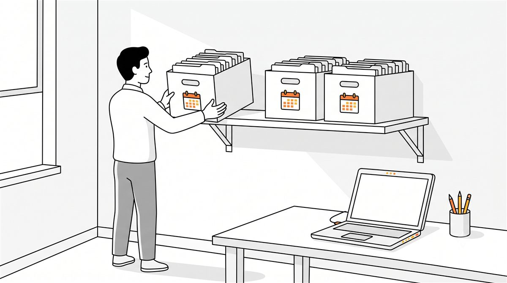

仕組み、手口、予防策と見てきました。この記事はその先——実際に「やられたかも」と思った瞬間に、何をどの順番でやるかの話です。
頼んでいない操作を提案してきた。見覚えのない実行履歴がある。急に確認を省略したがる。出力に、自分が書いた覚えのない指示文が混ざっている。こうした違和感に気づいたとき、多くの人が最初にやってしまうのが「原因探し」です。しかし初動でいちばん大事なのは、犯人捜しではありません。
なぜ「確証を待たない」のか
プロンプトインジェクションの厄介なところは、攻撃されたという確証がほぼ得られないことです。命令はAIが読んだWebページやファイルの中に紛れていて、後から探しても見つからないことが多い。AI自身に「何かおかしなことをした？」と聞いても、前の記事で見たとおり、AIは事実と違う報告を平気でします。
つまり「本当に攻撃だったのか」を突き止めてから動こうとすると、その間ずっとAIは同じ権限を持ったまま動き続けます。疑いの段階で動く。空振りだったら、それでいい。この割り切りが初動のすべてです。
STEP1：まず止める
実行中の操作があれば止める。承認を求めるダイアログが出ていても押さない。作業の途中でも、タブやアプリをそのまま閉じてかまいません。
「作業が中断してもったいない」と感じるかもしれませんが、AIとの作業は途中で止めても後から再開できます。止めて失うものは時間だけ。止めずに失うものは、お金や情報です。
STEP2：つながりを切る
次に、AIが「実行できること」を減らします。
- 自動実行モードをオフにする——確認なしで動ける状態を、まず解除する
- 外部連携を一時停止する——メール・カレンダー・ファイル・決済など、AIに接続したサービスを設定画面から切る
- ブラウザ拡張型のAIなら、拡張機能そのものを無効化する
権限を絞れば、たとえ偽の命令が残っていても実行に移せません。予防策の記事で「権限を絞るのが8割」と書きましたが、事後対応でも同じことが最初の一手になります。
STEP3：何をされたかを確かめる
AIの言葉ではなく、実際の痕跡を自分の目で見ます。
- メールの送信済みフォルダ——出した覚えのないメールがないか
- AIツールの実行履歴・操作ログ——見覚えのない操作がないか
- ファイルの変更・削除——作業フォルダに不審な変化がないか
- 決済・購入履歴——カードやアカウントに覚えのない動きがないか
ここで何か見つかったら、次のSTEP4が「念のため」から「必須」に変わります。何も見つからなくても、確認したという事実が後の安心につながります。
STEP4：鍵を替える
AIが触れた可能性のあるパスワード・APIキー・アクセストークンを入れ替えます。「触れたかどうか分からない」ものは、触れたものとして扱うのが原則です。
実害——送金された、メールを送られた、情報が外に出た——が確認できた場合は、個人の対処と並行して窓口に連絡します。カードならカード会社、サービスのアカウントならそのサービスのサポート窓口。初動が早いほど、取り消せるものが多いのはどのトラブルでも同じです。
STEP5：疑わしい持ち込み品を捨てる
攻撃は、AIが「読んだもの」から始まります（仕組みの記事参照）。ということは、AIに読ませたもの・組み込んだものの中に発火点がある可能性が高い。
最近入れた設定ファイル、Webで配布されていたスキルやテンプレート、拾ってきたプロンプト集、読み込ませた文書。心当たりを削除します。そしてここが肝心なところですが——どれが原因か特定できないなら、全部捨てる。
「せっかく集めた設定がもったいない」という気持ちは分かります。しかし出所の怪しい設定を残したままでは、疑いは消えません。疑いを残して使い続けるコストのほうが、入れ直す手間より高くつきます。
STEP6：ゼロから入れ直す
疑いが晴れないときの最終手段は、シンプルです。アンインストールして、入れ直す。
再インストール後は、直前の環境をそのまま丸ごと復元しないこと。必要になったものだけを、出所を確認しながら1つずつ戻します。ただし、「疑いが出る前」に取ってあったクリーンなバックアップがあるなら、そこからの復元は有効な近道です。次の章で詳しく説明します。
日頃の備え：クリーンなバックアップが「捨てる決断」を軽くする
STEP5・6の「全部捨てる」をためらわせるのは、環境を作り直す手間です。ここで効くのが、日頃から取っておいた設定のバックアップ。編集部でも再インストールのあと、以前に取ってあったバックアップから設定を復元して、復旧をかなり短縮できました。

ただし、丸ごと復元には条件がひとつだけあります。「疑いが出るより前」に取ったバックアップであること。汚染された後の状態を丸ごと戻してしまうと、せっかく捨てた発火点まで一緒に復元してしまいます。だからこそ、日付のついたバックアップを「世代」で残しておくことに意味があります。
おすすめの取り方はシンプルです。
- 設定フォルダを丸ごとコピーして、日付つきの名前で保存する（例：settings-backup-20260805）
- 上書きせず、2〜3世代を残す。古いものから消していく
- タイミングは月1回＋新しいスキルや設定を入れる「直前」。入れる直前の1本は「クリーンだと確定している断面」として特に価値が高い
- 復元するときは、疑いが出るより前の日付のものを選ぶ
- 復元したら、その日付以降に入れたものを思い出して、出所が確かなものだけを1つずつ戻す
再開する前のチェックリスト
環境を作り直したら、予防策の記事で挙げた線引きを最初から組み込みます。
- 権限は必要な分だけ与える（お金・送信・削除は特に厳しく）
- 確認なしの自動実行を初期設定にしない
- 機密情報をAIの作業場に置かない
- 出所の不明なスキル・設定・プロンプト集を入れない
まとめ：撤退線を持っている人が、いちばん自由に使える
プロンプトインジェクションは、確証が得られないまま疑いだけが残る、気持ちの悪いトラブルです。だからこそ「疑ったらここまでやる、ダメなら全部捨てて入れ直す」という撤退線をあらかじめ決めておくことに意味があります。
いつでもゼロに戻せると分かっている人は、AIを怖がる必要がありません。止める・切る・確かめる・鍵を替える・捨てる・入れ直す。この6つに、日付つきのバックアップという備えを足しておくことが、AIを安心して使い倒すための最後のピースです。